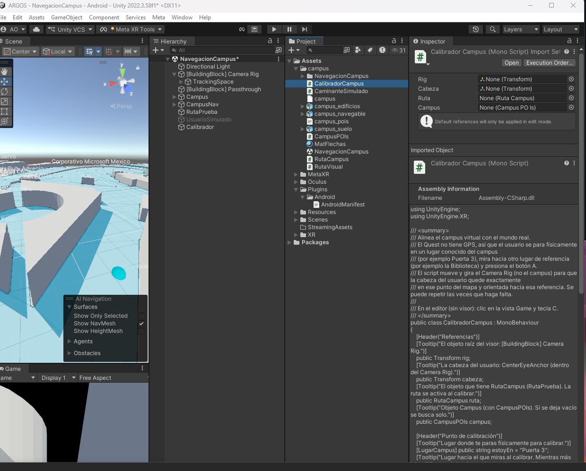
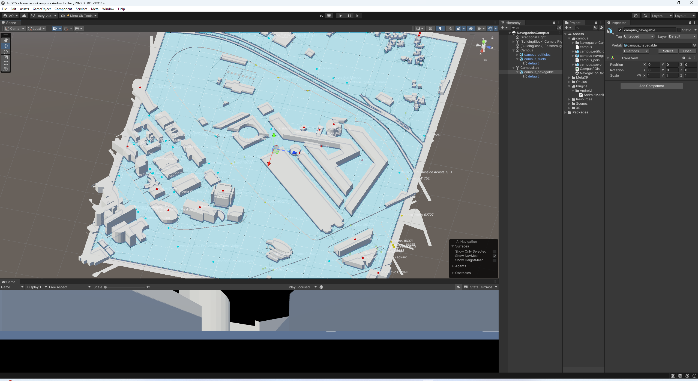

Práctica 1
Físicas Básicas y Gravedad
Exploramos cómo los objetos participan en la simulación física de Unity configurando un plano base y soltando objetos para analizar la masa, la gravedad y la resistencia en la caída.
Argos
Experiencias de programación, simulación física, interfaces y conectividad IoT desarrolladas en Unity para el proyecto Argos.

Práctica 1
Exploramos cómo los objetos participan en la simulación física de Unity configurando un plano base y soltando objetos para analizar la masa, la gravedad y la resistencia en la caída.
Práctica 2
Programamos la detección de colisiones mediante el evento OnCollisionEnter y evaluamos el comportamiento físico comparando los métodos de detección Discrete y Continuous.
Práctica 3
Introducción a la programación orientada a objetos en C#. Desarrollamos un cañón virtual creando instancias de balas físicas con Rigidbody, las cuales se autodestruyen mediante código tras unos segundos para optimizar la memoria.

Práctica 4
Creamos una interfaz gráfica sobre la pantalla mediante un Canvas, utilizando elementos TextMeshPro para crear un contador de munición y botones interactivos que accionan el disparo.
Práctica 5
Estructuramos el flujo del proyecto conectando diferentes niveles. Utilizamos el SceneManager y asignamos funciones de cambio de escena a los eventos OnClick de los botones en la interfaz.
Práctica 6
Integramos comunicación en tiempo real usando el protocolo MQTT en Unity. Desarrollamos interacciones de Realidad Mixta para cambiar el color de figuras y enviamos/recibimos comandos desde una placa ESP32 para controlar un carro omnidireccional.